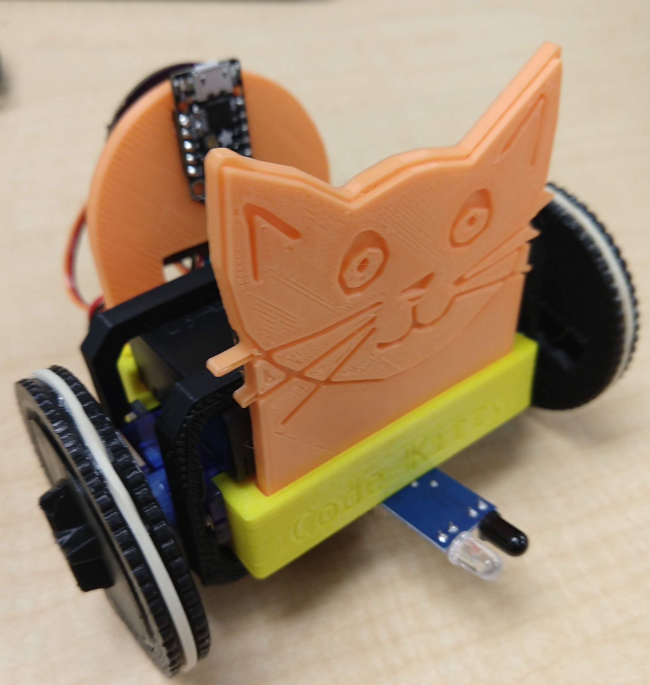
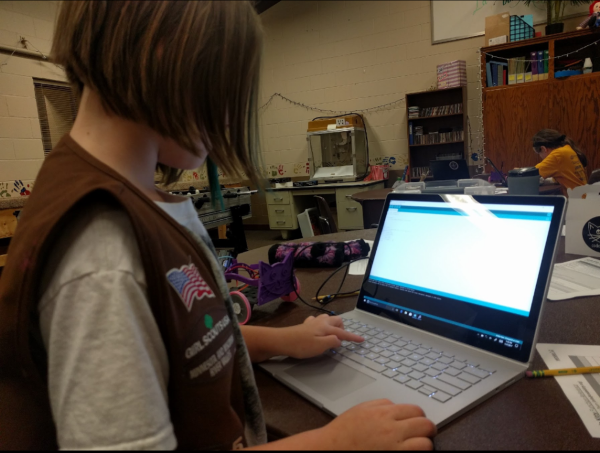
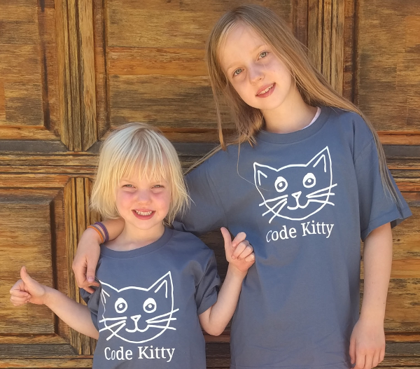

Code Kitty
Code Kitty
About Code Kitty
Who We Are
Jill
Jason
Carol
Sean

Dylan
Code Kitty is a 501(c)(3) tax-exempt Twin Cities, MN, USA-based non-profit made up of experienced engineers and educators who united around a shared vision of a world where everyone has the chance to dream and invent and make an impact on the world, and that engineering and technology skills enable that to happen.
To that end, we have made it our mission to break down the barriers to equitable technology education and access for all learners. Our research shows that girls and unerrepresented groups self-select out of opportunities to acquire engineering and technology skills as early as age 8, so we target elemetary age learners (and their teachers!) before this happens. We know that everyone can be an engineer and experience the joy of being a Maker and being able to bring their ideas to life and effectively solve problems. We have made it our work to provide this opportunity for as many learners as we are able.
What we do
We work to provide equitable access to engineering and technology skills and materials by providing a very inexpensive hands-on workshop based around a 3D printed robot kit. There is a profound sense of "ownership" to be found in building things with our hands, so we provide the robot as a disassembled kit, and introduce it through a richly integrated narrative which puts the learner at the center of a story - their story - of the discovery of the joys of engineering and robotics.
The current version of our robot kit is based around Adafruit's amazing Trinket m0 microcontroller, which runs CircuitPython. This allows us to start out with a purely browser-based instruction in the Python language and seamlessly transition to programming the robot in a now-familiar REPL-based environment, using our extremely simplified pre-installed library of functions, allowing even very young or inexperienced learners to write simplified code that makes their robot light up, change colors, play music, move around, and sense it's inputs and environment, creating an immediately gratifying and rewarding experience that shows them they can do it.
The best part is that at the end of the workshop, for which we ask a $50 donation per learner, they get to keep the robot. We enjoy all of the work and contact and opportunity provided by offering these workshops, but we have to admit that the look on their faces when we tell them it's their robot is especially rewarding. We have tried to keep the costs of the robot as low as possible, while providing an experience that is both rewarding and fulfilling for learners of all ages and experience levels.
We also offer our workshop at a classroom level, either as a provided addition to an existing curriculum or instruction block, or as an in-house workshop broken up over multiple days of instruction. The robots we provide then stay with the school, allowing them to continue using the robots to provide more learning opportunity even after our workshop is ended. We are happy to support this opportunity for schools, and are available for a host of other education and PTO support engagements on an ad-hoc basis. Please contact us if you'd like to work with us to enrich your education offering.

Code Kitty robot kit version 2.2

Helping Girl Sscouts earn STEM badges

The youngest Code Kittians